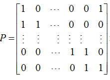
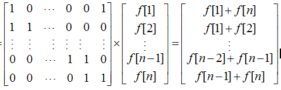
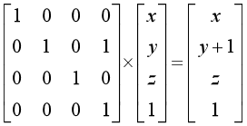

前面几篇随笔中介绍了利用矩阵乘法（特别是应用快速幂运算）解决递推快速求值、置换和几何变换等问题的方法。实际上矩阵乘法的应用远不止这些，下面通过几个实例来介绍下矩阵乘法的其它一些典型的应用。
【例1】多少条道。
给定一个有向图，问从A点恰好走k步（允许重复经过边）到达B点的方案数mod p的值。
（1）编程思路。
本题是矩阵乘法应用在图论中的一个典型方法。
给定了有向图，可以得到该图的邻接矩阵A，在邻接矩阵A中，A(i,j)=1当且仅当存在一条边i->j。若i->j不存在直接相连接的边，则A(i,j)=0。
令C=A*A，那么 C(i,j)= ΣA(i,k)*A(k,j)，实际上就等于从点i到点j恰好经过2条边的路径数（k为中转点）。
类似地，C*A =A*A*A的第i行第j列就表示从i到j经过3条边的路径数。同理，如果要求经过k步的路径数，只需要采用快速幂运算求出A^k即可。
（2）源程序。
#include <stdio.h>
#include <string.h>
#define MOD 1000
struct Matrix
{
int mat[21][21]; // 存储矩阵中各元素
};
Matrix matMul(Matrix a ,Matrix b,int n,int m)
{
Matrix c;
memset(c.mat,0,sizeof(c.mat));
int i,j,k;
for (k = 1; k<=n ; k++)
for (i=1 ;i<=n ; i++)
if (a.mat[i][k]!=0)
for (j = 1 ;j<=n ;j++)
c.mat[i][j] = (c.mat[i][j] + a.mat[i][k] * b.mat[k][j]) % m;
return c;
}
Matrix quickMatPow(Matrix a ,int n,int b,int m) // n阶矩阵a快速b次幂
{
Matrix c;
memset(c.mat ,0 ,sizeof(c.mat));
int i;
for (i = 1 ;i <= n ;i++)
c.mat[i][i] = 1;
while (b!=0)
{
if (b & 1)
c = matMul(c ,a ,n,m); // c=c*a;
a = matMul(a ,a ,n,m); // a=a*a
b /= 2;
}
return c;
}
int main()
{
int n,m,s,t,nCase,a,b,k,i;
Matrix p,ans;
while (scanf("%d%d",&n,&m) && n+m!=0)
{
memset(p.mat,0,sizeof(p.mat));
for (i=1;i<=m;i++)
{
scanf("%d%d",&s,&t);
p.mat[s+1][t+1]=1;
}
scanf("%d",&nCase);
for (i=1;i<=nCase;i++)
{
scanf("%d%d%d",&a,&b,&k);
ans=quickMatPow(p,n,k,MOD);
printf("%d\n" ,ans.mat[a+1][b+1]);
}
}
return 0;
}
将此源程序提交给 HDU 2157 “How many ways??”，可以Accepted。
我们知道，构造好平移、缩放或旋转的转换矩阵后，可以实现几何变换；构造好置换矩阵后，可以实现置换操作。这样，在一些问题中，我们也可以根据状态变化的情况，构造一个状态转移矩阵，来解决一些状态变换类问题。
【例2】灯的状态。
有n盏灯排成一排，开关状态已知，0代表灯熄灭，1代表点亮。每过一秒：第i（1<=i<=n）盏灯会根据刚才左边的那个灯的开关情况变化，如果左边的灯是亮的，它就会变化，如果左边的灯是熄灭的，它就保持原来状态。第1盏灯的左边是最后一盏灯。问m秒后全部n盏灯的状态。
（1）编程思路。
设f[i]代表第i盏灯的状态，f[i]=1代表第i盏灯是点亮的，f[i]=0代表第i盏灯是熄灭的。
对于第i（1<i<=n）盏灯，若第i-1盏灯点亮的： 当前灯的动作: 1->0; 0->1;
若第i-1盏灯熄灭的： 当前灯的动作： 1->1; 0->0;
由此，可推得 f[i]=(f[i]+f[i-1])%2 （1<i<=n）。
对于第1盏灯，它的状态变化与第n盏灯相关，即 f[1]=(f[1]+f[n])%2 。
由此，我们可以构造一个n*n的状态转移矩阵P来完成灯的状态转换。


构造好状态转移矩阵P，P^m的结果就是m秒后的状态转移矩阵。再将状态转移矩阵除以n盏灯初始状态列向量F即可得到n盏灯的最终状态。
（2）源程序。
#include <stdio.h>
#include <string.h>
#define MOD 2
struct Matrix
{
int mat[101][101]; // 存储矩阵中各元素
};
Matrix matMul(Matrix a ,Matrix b,int n)
{
Matrix c;
memset(c.mat,0,sizeof(c.mat));
int i,j,k;
for (k = 1; k<=n ; k++)
for (i=1 ;i<=n ; i++)
if (a.mat[i][k]!=0)
for (j = 1 ;j<=n ;j++)
c.mat[i][j] = (c.mat[i][j] + a.mat[i][k] * b.mat[k][j]) % MOD;
return c;
}
Matrix quickMatPow(Matrix a ,int n,int b) // n阶矩阵a快速b次幂
{
Matrix c;
memset(c.mat ,0 ,sizeof(c.mat));
int i;
for (i = 1 ;i <= n ;i++)
c.mat[i][i] = 1;
while (b!=0)
{
if (b & 1)
c = matMul(c ,a ,n); // c=c*a;
a = matMul(a ,a ,n); // a=a*a
b /= 2;
}
return c;
}
int main()
{
int m,n,i,j,s;
char f[101];
int temp[101],ans[101];
Matrix p;
while(scanf("%d" ,&m)!=EOF)
{
scanf("%s",f);
n=strlen(f);
for (i=1;i<=n;i++)
temp[i]=f[i-1]-'0';
memset(p.mat,0,sizeof(p.mat));
p.mat[1][1]=p.mat[1][n]=1;
for (i=2;i<=n;i++)
p.mat[i][i-1]=p.mat[i][i]=1;
p = quickMatPow(p,n,m);
for (i=1;i<=n;i++)
{
s=0;
for (j=1;j<=n;j++)
s+=p.mat[i][j]*temp[j];
ans[i]=s%MOD;
}
for (i=1;i<=n;i++)
printf("%d" ,ans[i]);
printf("\n");
}
return 0;
}
将此源程序提交给 HDU 2276 “Kiki & Little Kiki 2”，可以Accepted。
【例3】训练小猫。
用k个操作序列来训练n只小猫。 操作系列中：
g i：表示第i只猫得到一个花生， e i ：表示第i只猫吃掉所有花生，s i j ：表示第i只猫和第j只猫交换花生。
k个操作序列要被重复m次，问最后每只猫有多少花生。
（1）编程思路。
构造一个（n+1）*（n+1）（下标从1开始）的转换矩阵P，该转换矩阵根据K个操作序列来构造，具体构造方法是：
先将P初始化为单位矩阵。
对于g i操作，将当前矩阵P的第i行的第（n+1）列加1。
例如，有3只小猫，某次操作前3只小猫的花生数分别为x,y和z。 执行 g 2 操作。矩阵的构造表示为

对于 e i 操作：将当前矩阵P第i行全部清0即可。
对于 s i j 操作 ：交换当前矩阵P的第i行和第j行即可。
构造好了转换矩阵（注意该转换矩阵代表着一次k个操作序列），执行P^m，相当将k个操作序列重复m次。
由于n只小猫的初始花生数均为0，因此最终P矩阵的第n+1列的第1~n行元素的值就是最后n只小猫的最后花生数。
（2）源程序。
#include <stdio.h>
#include <string.h>
struct Matrix
{
__int64 mat[105][105];
};
Matrix start;
Matrix matMul(Matrix a ,Matrix b,int n)
{
Matrix c;
memset(c.mat,0,sizeof(c.mat));
int i,j,k;
for (k = 1; k<=n ; k++)
for (i=1 ;i<=n ; i++)
if(a.mat[i][k])
for (j = 1 ;j<=n ;j++)
c.mat[i][j] = (c.mat[i][j] + a.mat[i][k] * b.mat[k][j]);
return c;
}
Matrix quickMatPow(Matrix a ,int b ,int n) // n阶矩阵a快速b次幂
{
Matrix c;
memset(c.mat ,0 ,sizeof(c.mat));
int i;
for (i = 1 ;i <= n ;i++)
c.mat[i][i] = 1;
while(b)
{
if (b & 1)
c = matMul(c ,a ,n); // c=c*a;
a = matMul(a ,a ,n); // a=a*a
b /= 2;
}
return c;
}
int main()
{
int n,m,k,i,j;
__int64 t;
while (scanf("%d%d%d",&n,&m,&k)!=EOF)
{
if (n==0 && m==0 && k==0)
break;
n++;
memset(start.mat, 0, sizeof(start.mat));
for (i = 1; i<=n; i++)
start.mat[i][i] = 1;
for (i=1; i<=k; i++)
{
int a, b;
char ch[2];
scanf("%s", ch);
if (ch[0] == 'g')
{
scanf("%d", &a);
start.mat[a][n]++;
}
else if (ch[0] == 'e')
{
scanf("%d", &a);
for (j = 1; j <= n; j++)
start.mat[a][j] = 0;
}
else
{
scanf("%d%d", &a, &b);
for (j = 1; j<=n; j++)
{
t=start.mat[a][j];
start.mat[a][j]=start.mat[b][j];
start.mat[b][j]=t;
}
}
}
start= quickMatPow(start,m,n);
for (i = 1; i <n; i++)
printf("%I64d ", start.mat[i][n]);
printf("\n");
}
return 0;
}
将此源程序提交给 POJ 3735“Training little cats”，可以Accepted。